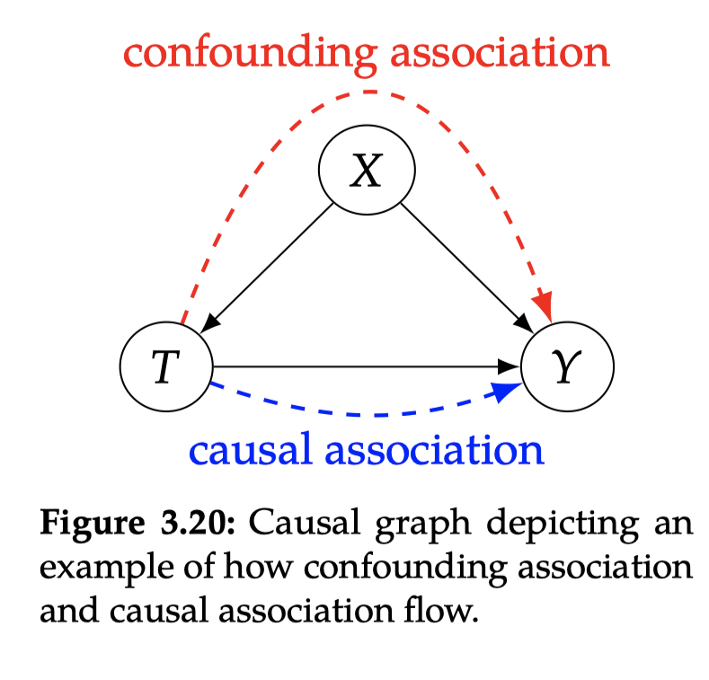

3. The Flow of Association and Causation in Graphs¶
3.1 Graph Terminology¶
3.2 Bayesian Networks¶
Assumption 3.1 (Local Markov Assumption)
Given its parents in the DAG, a node \(X\) is independent of all its non-descendants.
Definition 3.1 (Bayesian Network Factorization)
Given a probability distribution \(P\) and a DAG \(G\), \(P\) factorizes according to \(P\) if
Assumption 3.2 (Minimality Assumption)
Given its parents in the DAG, a node \(X\) is independent of all its non-descendants (Assumption 3.1).
Adjacent nodes in the DAG are dependent.
相比于假设3.1，3.2告诉我们不能有额外的独立性存在，例如图3.8，通过假设3.1，可以将\(P(x,y)\)分解为\(P(x)P(y|x)\)或者\(P(x)P(y)\)，但在3.2的假设下，\(P(x)P(y)\)是不成立的
3.3 Causal Graphs¶
Definition 3.2 (What is a cause?)
A variable \(X\) is said to be a cause of a variable \(Y\) if \(Y\) can change in response to changes in \(X\).
Assumption 3.3 ((Strict) Causal Edges Assumption)
In a directed graph, every parent is a direct cause of all its children.
3.4 Two-Node Graphs and Graphical Building Blocks¶
本节我们将通过最基础的组成模块来理解因果性和相关性在DAG中的是如何传递的。
最基础的组成模块包括：
chain
fork
immorality(collider)
两个不相连的节点
两个相连的节点
对于每一种组成模块，我们会给出两个节点（条件）独立或不独立的intuition以及证明。
如图3.10，两个不相连的节点，根据Definition 3.1可以得到对应的贝叶斯网络分解式：
如图3.11，根据Assumption 3.3，\(x_1\)是\(x_2\)的因。
3.5 Chains and Forks¶
3.5.1 相关性（Association）¶
要证明\(X_1\amalg X_3|X_2\)，只需要说明\(P(x_1,x_3|x_2)=P(x_1|x_2)P(x_3|x_2)\)。
Chains¶
对于chains，可以做如下因式分解：
通过贝叶斯定理得到
Forks¶
通过贝叶斯定理得到
3.5.2 因果性（Causation）¶
相关性是对称双向的，而因果性只在单个方向上传递
因果性只在有向路径上传递
相关性在不包含immorality的任意路径上传递
3.6 Colliders and their Descendants¶
3.6.1 immorality(colliders)¶

不同于chains和forks，在immorality(colliders)中\(X_1\amalg X_3\)，通过贝斯网络因式分解和边缘化\(x_2\)可以说明

{kind=link}
{kind=link}
{kind=link}
{kind=link}
{kind=link}
{kind=link}
{kind=link}
3.6.3 Numerical Example¶
考虑如下DGP(data generating process)数据生成过程，\(X_1\)和\(X_3\)独立地服从标准正态分布，并用来计算\(X_2\)：
我们已经声明了\(X_1\)和\(X_3\)是独立的，但是为了能够方便对比，计算其协方差：
condition on \(X_2\)时，协方差是非零值，说明\(X_1\)和\(X_3\)是相关的：
3.6.4 Descendants of Colliders¶
因为从collider到它的孩子存在一条有向因果路径，他们是相关的，因此可以把collider的孩子看作其代理人，因此condition on collider的孩子跟它自己是相似的。
3.7 d-separation¶
Definition 3.3 (blocked path)
A path between nodes \(X\) and \(Y\) is blocked by a (potentially empty) conditioning set \(Z\) if either of the following is true:
Along the path, there is a chain \(\cdots \rightarrow W \rightarrow \cdots\) or a fork \(\cdots \leftarrow W \rightarrow \cdots\), where \(W\) is conditioned on (\(W\in Z\)).
There is a collider \(W\) on the path that is not conditioned on (\(W\notin Z\)) and none of its descendants are conditioned on (\(de(W)\nsubseteq Z\)).
Definition 3.4 (d-separation)
Two (sets of) nodes \(X\) and \(Y\) are d-separated by a set of nodes \(Z\) if all of the paths between (any node in) \(X\) and (any node in) \(Y\) are blocked by \(Z\).
Theorem 3.1 (global Markov assumption)
Given that \(P\) is Markov with respect to \(G\) (satisfies the local Markov assumption, Assumption 3.1), if \(X\) and \(Y\) are d-separated in \(G\)conditioned on \(Z\), then \(X\) and \(Y\) are independent in \(P\) conditioned on \(Z\). We can write this succinctly as follows:
这个定理非常重要，公式称为 global Markov assumption
local Markov assumption，Bayesian network factorization 和 global Markov assumption 是等价的(all equivalent)。
{kind=link}
{kind=link}
3.8 Flow of Association and Causation¶
回顾Section 1.3.2，不仅仅是相关性不是因果性，其实因果性是相关性的子类，这就是为什么相关性和因果性都在有向路径中传递。
{kind=link}
我们将有向路径中传递的相关性看做因果相关性，一种常见的非因果相关性叫做混淆相关性(confounding association)，如图3.20。
常规的贝叶斯网络是单纯的统计模型，因此我们只能在贝叶斯网络中讨论相关性的传递。相关性在因果图中也有着完全相同的方式。通过基础的模块（chain、fork、collider）我们能知道相关性在普遍DAG图中是如何传递的，也能通过两个节点是否是d-sparated来判断是否相关。
Assumption 3.3赋予了有向路径传递因果性的独有角色，同时表明因果性是不对称的，相关性是对称的。
3.8.1 d-separation说明相关性是因果性¶
在把\(X\)的所有出度（从\(X\)指向外部的边）删除的途中，如果\(X\)和\(Y\)是d-separated，那么他们之间只存在单纯的非因果相关性，因为因果性只存在\(X\)指向\(Y\)的边中，已经被删掉了。
{kind=link}
图3.21通过解释相关性的传递说明了每个假设(assumption)的意义：
Markov Assumption(Assumption 3.1)告诉我们哪些节点是不相关的；
Minimality Assumption(Assumption 3.2)又告诉我们哪些路径上存在相关性；
Causal Edges Assumption(Assumption 3.3)让我们知道因果性只在有向路径上传递
最重要是1和3，因为Minimality Assumption的第一部分就是Markov Assumption，第二部分也被囊括在Causal Edges Assumption中了。